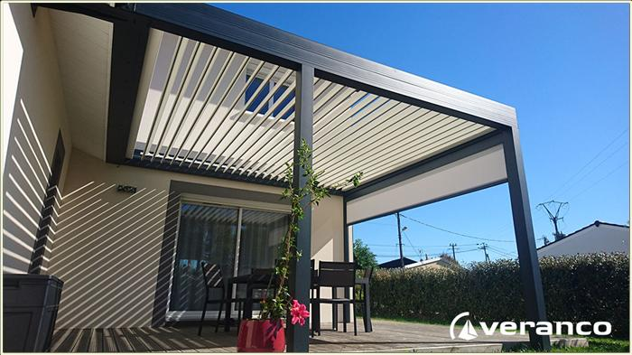
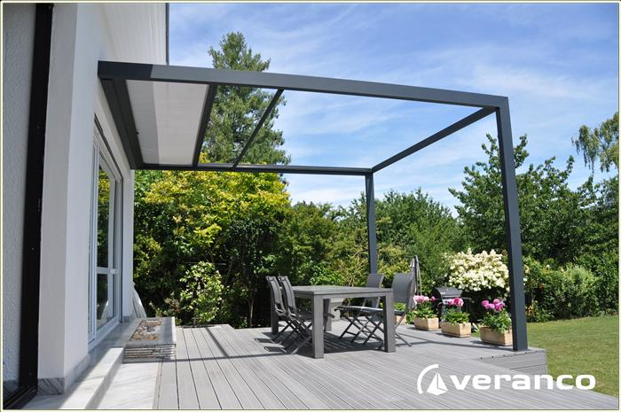
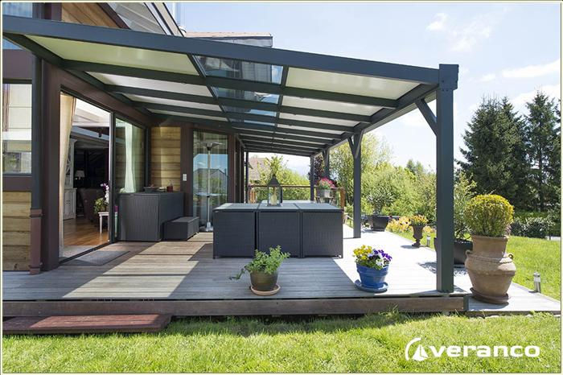
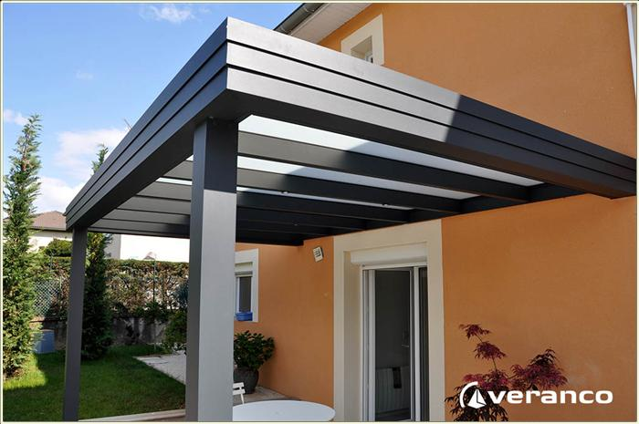
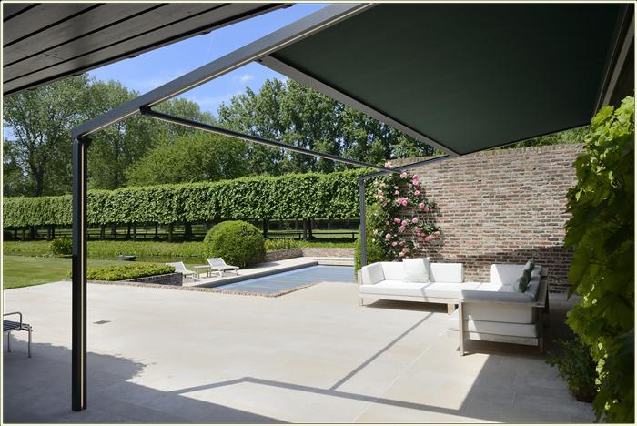
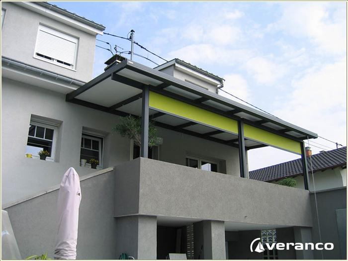
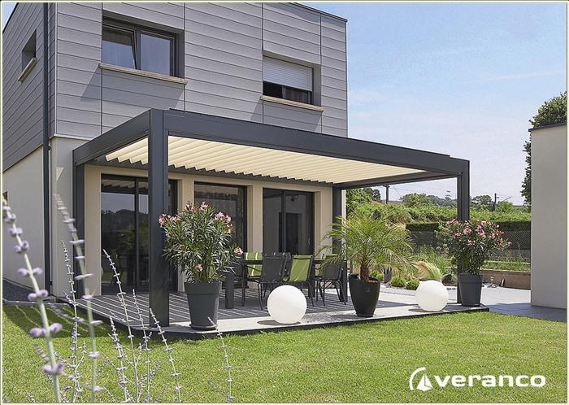
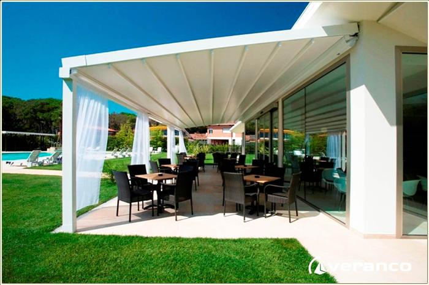

Demandez votre devis
Veuillez écrire votre demande
Pergola Ambre
La pergola blioclimatique à toiture plate brise soleil, tout aluminium, vous offrant une protection solaire horizontale à lames orientables s'intégrant parfaitement à tous les lieux de vie.
Image
Description de votre pergola
La pergola blioclimatique à toiture plate brise soleil, tout aluminium, voLa pergola blioclimatique à toiture plate brise soleil, tout aluminium, vous offrant une protection solaire horizontale à lames orientables s'intégrant parfaitement à tous les lieux de vie.
S'intégrant parfaitement à tous les lieux de vie : terrasses, balcons, patios, piscines, pool houses. Pour en profiter confortablement et au maximum, les lames de toitures de PERGOLA AMBRE, en akuminium extrudé, sont orientables de 0 à 135° permettant de réguler à souhait la protection solaire et la ventilation.
En position fermée, les lames de PERGOLA AMBRE offrent une véritable toiture étanche aux pluies normales, protégeant les occupants, l'espace et le mobilier. Dans cette psosition la goutière latérale permet d'évacuer les eaux de pluie vers deux poteaux.
L'orientaiton des lames est assurée par un système électrique, faicle et silencieux qui permet un réglage optimum pour un maximum de confort. Des capteurs de pluie, de vent et de température sont disponibles pour automatiser l'ouverture et la femeture des lames.
Pergola Cocoon
Cette pergola à structure aluminium à une protection solaire intégrée par un store screen.
image
Description de votre pergola
COCOON est une pergola à structure aluminium Veranco avec une protection solaire intégrée assurée par un store screen. Produit durable, esthétique, aux finitions particulièrement soignées, elle permet d'avoir un espace sur terrasse où profiter de l'extérieur. Pour un plus éthétique, veranco vous offre le choix de trois finitions des pieds de poteaux. Toute la visserie et les pièces de fixation sont en acier inox. Les fonctions laquées de la structure cocoon sont disponibles dans toutes les teintes RAL. Toutes les laques Veranco reçoivent le label Qualicoat.
La structure de la pergola est en aluminium de premier choix. La fixation des profits tubulaires latéraux est totalement invisible. Pour donner à l'ensemble de la structure aluminium une plus grande résistance, la poutre sablière en façade est solidaire des poteaux de très forte section. Les poteaux sont eux mêmes ancrés au sol.
En toiture, la pergola COCOON est équipée d'un store screen spécialement étudié afin d'offrir un degré de confort inégalé, quelle que soit une orientation. Le store screen de toiture est élégant grâçe à son caisson compact, élancé et discret. Tésté, il a reçu la classificaiton vent la plus haute. La tension de la toile est assurée par un système garantissant son meilleur maintien et pour améliorer encore plus sa résistance, il reçoit un rouleau de soutien à partir de trois mètres de profondeur.
Pergola Création
Choisissez de la personnalisé entièrement vous même, avec l'aide de nos professionel.
image
Description de votre pergola
Les pergolas Création sont par définition personnalisées. Elles correspondent fortement aux goûts des propriétaires de la maison et aux caractéristiques de cette dernière..
On peut partir d’un modèle existant et le transformer vers un projet original suivant un de vos souhaits particuliers ou une contrainte des lieux. On peut également créer sur une idée de départ et adapter le projet à votre terrasse, l’exposition, les proportions et les ouvertures de votre maison.
Les pergolas Création peuvent se couvrir d’une toile « respirante » ou étanche (Soltis 92 et W96 de Serge FERRARI) ou de plaques de polycarbonate. La couleur de la structure aluminium est à choisir dans le nuancier RAL et plus de 10 teintes à effet décoratif. Les toiles sont « respirantes » ou étanches (Soltis 92 et W96 de Serge FERRARI). Les plaques de polycarbonate sont dans une version « opale ».
Pergola Jade
Jade est une pergola à toiture plate, elle est adaptable à toutes les exigeances architecturales.
image
Description de votre pergola
Jade de VERANCO est une pergola à toiture plate. Patriculièrement adaptable à toutes les exigences architecturales. Sur la terrasse, adossée à la maison, elle vous offre un espace de vie convivial pour profiter pleinement de votre environnement.
La structure de votre pergola jade de veranco est en aluminium de premier choix en 6060. L'un des poteaux est équipé d'une descente d'eau intégrée dans sa structure, elle est donc invisible. Le céneau périphérique, solidaire des poteaux apporte une note éthétique à l'ensemble de la structure.
Pour une meilleure résistance aux vents, la cape à visser en aluminium, de la couleur de votre pergola Jade, permet de solidariser les chevrons tubulaires de forte section, les plaques de toiture en épaisseur 25mm ou les vitrages feuilletés. Toute la visserie et les pièces de fixation sont en acier inox et aluminium. Vous pouvez en option y ajouter des screens, des panneaux coulissants en verre, des puits de lumière, des spots pour éclairer vos soirées d'été et choisir la couleur de finition.
Pergola Oasis
Jade est une pergola à toiture plate, elle est adaptable à toutes les exigeances architecturales.
image
Description de votre pergola
La pergola OASIS est un store de terrasse économique en aluminium avec un toit rétractable offrant une protection contre le soleil et la pluie. Fiable et entièrement automatique. La pergola se raccorde parfaitement à chaque facade, fermé elle offre tous les avantages d'un véritable toit, totalement ouverte, elle disparait pour devenir presque invisible dans l'environnement.
Vous optez pour une protection solaire élégante, efficace et durable. Dotée d'un design élégant, moderne et extremement raffiné, la pergola fait preuve néanmoins d'une robustesse exceptionnelle.Le toit de la pergola est pourvu d'une toile solidement tendue avec système de fermeture zip sur les cotés. La toile conserve une surface tendue grace au calage efficace dans les coulisses latérales.
Vous gerez facilement votre zone de confort. Le déroulement et le retrait de la toile screen sur la toiture sont facilités par une manoeuvre électrique à distance. Veranco vous offre un large choix de type et de finition de toile de haute qualité. La surface maximale de la toile est six metres de large avec une avancée de cinq metres.
Pergola Saphir
Jade est une pergola à toiture plate, elle est adaptable à toutes les exigeances architecturales.
image
Description de votre pergola
Un exercice de style reussi. Création originale et unique SAPHIR de veranco est une pergola à débord de toiture qui d'adapte à tous les styles de maison contribuant à l'agrément extérieur tout en permettant de jouir paisiblement de sa terrasse et de son environnement.
La durabilité, le choix et la sécurité de l'investissement. La structure de la pergola saphir est en aluminium de premier choix. La fixation de la structure est assurée par une faitiere murale fermée sur laquelle sont fixés les chevrons. Sur les chevrons tubulaires de forte seciton, la cape aluminium vissé permet de solidariser, pour une meilleure résistance aux vents, les plaques de toitures en épaisseur de 25mm.
La pergola aluminium saphir allie une création au style unique et élégant à la facilité d'entretien de l'aluminium. En option, on peut y ajouter, des puits de lumière et des spots pour éclairer les soirées d'été et choisir la couleur de finition de la structure aluminium qui s'accorde le mieux à l'environnement.
Pergola Pergolame
Avec cette pergola plate en aluminium extrudées, horizontales et orientables prolonger l'été!
image
Description de votre pergola
Les pergola bioclimatique vous permet de profiter davantage de votre terrasse. Déclinée en deux éditions, Algarve et Camargue, ces pergolas bioclimatiques s’intègrent parfaitement à votre maison et s’adaptent à toutes les météos. Pluie, vent ou soleil.
Les pergolames Algarve et Camargue se composent d’une toiture plate à lames horizontales et orientables à l’aide d’un système électrique, vous permettant de régler la protection solaire et la ventilation. Ainsi, les pergolames protègent des intempéries en position fermée. Dimensions maximales : largeur 4 mètres, profondeur 6,050 mètres, hauteur de passage 2,80 mètres
La pergola blioclimatique à toiture plate brise soleil, tout aluminium, vous offrant une protection solaire horizontale à lames orientables s'intégrant parfaitement à tous les lieux de vie.La pergola blioclimatique à toiture plate brise soleil, tout aluminium, vous offrant une protection solaire horizontale à lames orientables s'intégrant parfaitement à tous les lieux de vie.La pergola blioclimatique à toiture plate brise soleil, tout aluminium, vous offrant une protection solaire horizontale à lames orientables s'intégrant parfaitement à tous les lieux de vie.
Pergola Pergostore
Sur votre terrasse, dans votre jardin ou en bord de piscine, avec pergostore vous pouvez maintenant vous créer un espace convivial.
image
Description de votre pergola
PERGOSTORE atténue la luminosité sans assombrir, fait obstacle aux U.V. et peut même vous protéger d’une ondée passagère. Vous pourrez éclairer, chauffer et même sonoriser votre PERGOSTORE pour y passer d’agréables soirées.
La pergola blioclimatique à toiture plate brise soleil, tout aluminium, vous offrant une protection solaire horizontale à lames orientables s'intégrant parfaitement à tous les lieux de vie.
3 gammes :PERGOSTORE RELAX peut être installée au milieu du jardin ou au bord de la piscine, pour offrir un espace de confort ombragé.Grâce à sa structure réalisée intégralement en profils aluminium extrudés de forte section, PERGOSTORE RELAX peut être assemblée avec 4 ou 6 poteaux permettant de créer des abris de différentes surfaces de 25 à 50M2. Pergostore zen+ PERGOSTORE à poser en applique sur un mur avec toile en suspension tendue et système anti-gouttes. Couverture maximale : largeur 13 mètres, avancée de 7 mètres à 9 mètres.PERGOSTORE autoportant ne nécessitant pas d’appui. Proposé en version simple ou double pente. Dimensions maximales : largeur 13 mètres, avancée limitée à 6, 50 mètres par pente.